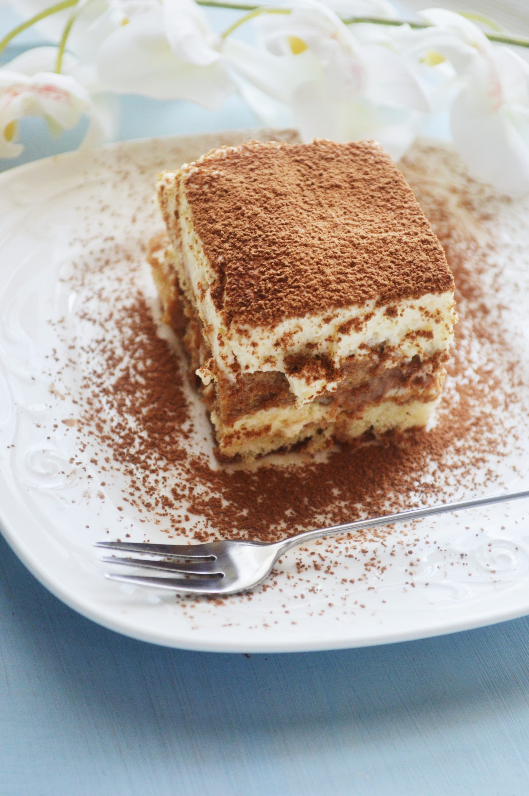

Tiramisu Recipe

Description
Done correctly, a classic tiramisu can be transcendent.
A creamy dessert of espresso-soaked ladyfingers surrounded by lightly sweetened whipped cream and a rich mascarpone,
tiramisu relies heavily on the quality of its ingredients.
Ingredients
- 4 large egg yolks
- 3/4 cup heavy cream
- 100 grams granulated sugar, divided
- 227 grams mascarpone
Steps
- Using an electric mixer in a medium bowl, whip together egg yolks and 1/4 cup/50 grams sugar until very pale yellow and about tripled in volume. A slight ribbon should fall from the beaters (or whisk attachment) when lifted from the bowl. Transfer mixture to a large bowl, wiping out the medium bowl used to whip the yolks and set aside.
- In the medium bowl, whip cream and remaining 1/4 cup/50 grams sugar until it creates soft-medium peaks. Add mascarpone and continue to whip until it creates a soft, spreadable mixture with medium peaks. Gently fold the mascarpone mixture into the sweetened egg yolks until combined.
- Combine espresso and rum in a shallow bowl and set aside.
- Using a sifter, dust the bottom of a 2-quart baking dish (an 8x8-inch dish, or a 9-inch round cake pan would also work here) with 1 tablespoon cocoa powder.
- Dust top layer with remaining tablespoon of cocoa powder. Top with shaved or finely grated chocolate, if desired./li>